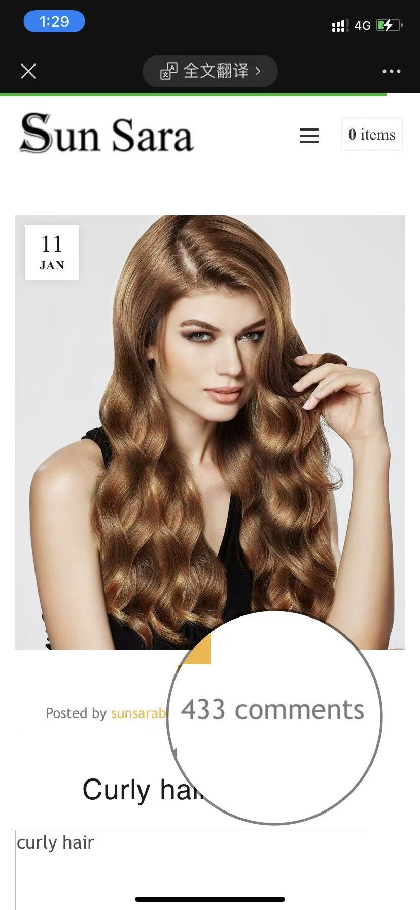

← 返回案例
Early B2B SEO
海外洗护 B2B 网站的早期 SEO 基础经验。
作为该项目唯一的 SEO 执行人员，我独立负责网站早期 SEO 建设，包括关键词研究、TDK 与产品页优化、英文博客内容、内容发布流程及用户问题研究。
+200%自然流量
+20%CTR
50+/mo自然询盘
433博客评论
策略与执行
- 从关键词研究建立内容基础：围绕海外护发行业与客户需求，建立200+行业关键词库，用于两个网站的产品页、英文博客与页面元数据优化。项目自然流量增长200%，CTR 提升20%。
- 用真实用户问题带动互动：围绕海外客户的护发痛点策划英文内容，其中《Curly Hair Struggles》获得433条评论，为后续选题提供用户反馈。
- 将产品内容连接到业务询盘：优化产品信息、英文文案和相关博客内容，帮助海外客户理解产品与使用场景，支持网站每月获得50+自然询盘。
- 用发布流程和数据持续改进内容：建立内容发布 SOP，并根据 GA 数据调整选题和页面内容，使重点页面平均停留时间从1分钟提升至2分钟。

1 / 1